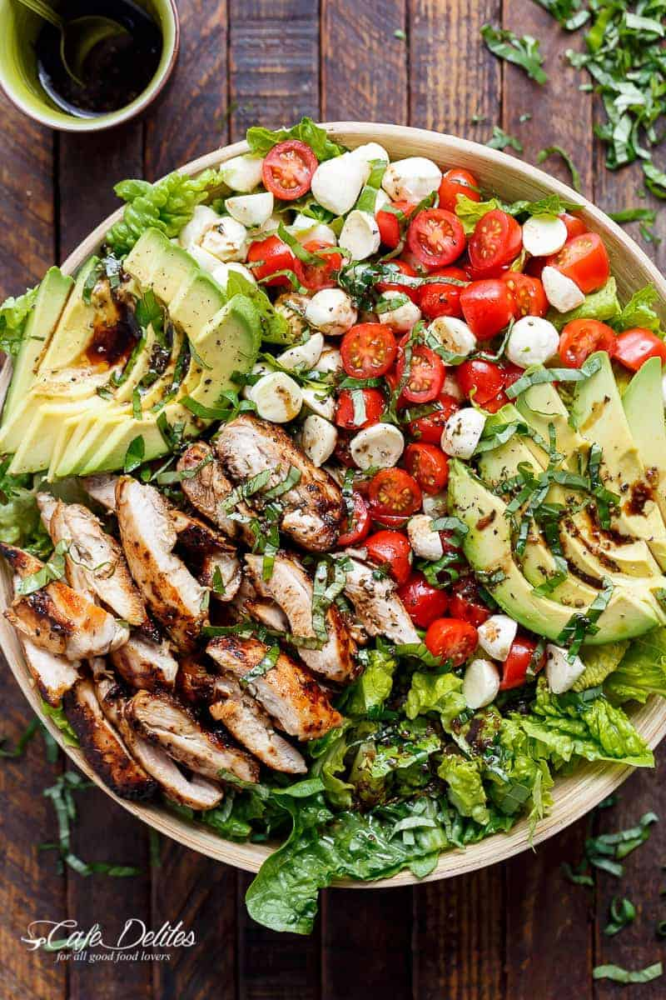

Chicken Avocado Caprese Salad

Description
Balsamic Chicken Avocado Caprese Salad is a quick and easy meal in a salad! Seared chicken, fresh mozzarella
and tomato halves, creamy avocado slices and shredded basil leaves are drizzled with an incredible
balsamic dressing that doubles as a marinade for the ultimate salad!
Recipe Credits
Cafe Delites Blog: Chicken Avocado Caprese Salad
Ingredients
- Marinade Dressing:
- 1/4 cup (60 mL) balsamic vinegar
- 2 tablespoons (30 mL) olive oil
- 2 teaspoons brown sugar
- 1 teaspoon minced garlic
- 1 teaspoon minced garlic
- 1 teaspoon salt
- Salad:
- 4 chicken thigh fillets, skin removed (no bone)*
- 5 cups Romaine, (or cos) lettuce leaves, washed and dried
- 1 avocado, sliced
- 1 cup cherry or grape tomatoes, sliced
- 1/2 cup mini mozzarella / bocconcini cheese balls
- 1/4 cup basil leaves, thinly sliced
- Salt and pepper, to season
Steps
- Whisk marinade ingredients together to combine. Place chicken into a shallow dish; pour 4 tablespoons of the dressing
/ marinade onto the chicken and stir around to evenly coat chicken. Reserve the untouched marinade to use as a dressing.
- Heat about one teaspoon of oil in a large grill pan or skillet over medium-high heat and grill or sear chicken fillets on
each side until golden, crispy and cooked through. Once chicken is cooked, set aside and allow to rest.
- Slice chicken into strips and prepare salad with lettuce, avocado slices, tomatoes, mozzarella cheese and chicken. Top with
basil strips; drizzle with the remaining dressing; season with salt and pepper; serve.
Notes
*Boneless, skinless chicken breasts can be used instead of thighs